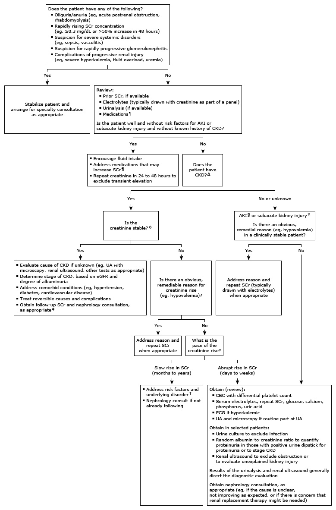

SCr: serum creatinine; AKI: acute kidney injury; CKD: chronic kidney disease; UA: urinalysis; eGFR: estimated glomerular filtration rate; CBC: complete blood count; ECG: electrocardiogram; NSAID: nonsteroidal antiinflammatory drug; IV: intravenous; GFR: glomerular filtration rate; ACE: angiotensin-converting enzyme; ARB: angiotensin II receptor blocker; UTI: urinary tract infection.
* The normal mean SCr varies according to gender, race, and body size in part related to muscle mass. Interpretation of a specific abnormal test result should be based upon the reference range reported with that result.
¶ Examples of drugs associated with nephrotoxicity:Examples of drugs that may reduce GFR without causing kidney damage:
Examples of drugs that increase SCr independent of GFR:
Δ CKD is defined by the presence of kidney damage (urinary albumin excretion of ≥30 mg/day) or decreased kidney function (eGFR <60 mL/min) for 3 or more months.
◊ When the creatinine is stable, GFR-estimation equations provide a more accurate reflection of renal function than the SCr. GFR-estimating equations are not reliable in the setting of unstable serum creatinine.
§ AKI may be defined as an increase in SCr ≥0.3 mg/dL or >50% increase in SCr within 48 hours or decrease in urine output <0.5 mL/kg/hour for >6 hours. AKI typically occurs in hospitalized patients or after a procedure.
¥ Subacute kidney injury may be defined as worsening SCr developing more slowly than AKI over <3 months duration or an elevated SCr of unknown duration. Subacute kidney injury may overlap with AKI.
‡ Obtain nephrology consultation, even if "stable" SCr, if any of the following are present in a patient with CKD:† Common risk factors for CKD include: